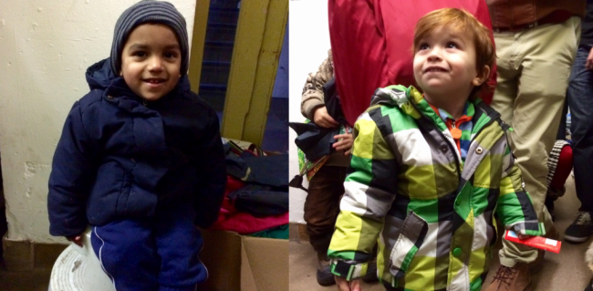
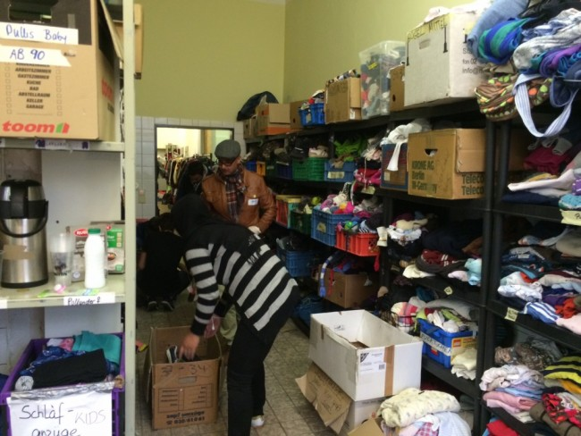
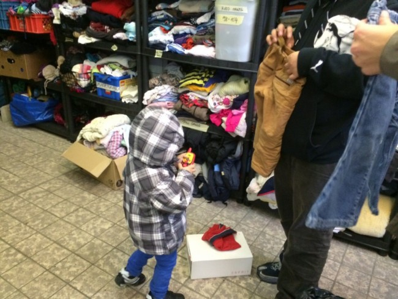

Lens: Four Hours at Lageso

A curly-haired two year old hangs from my hip. His modest number of pounds start to wear on my side as I spin us back and forth in the narrow space. By some stroke of luck he has yet to start crying (this doesn’t last). He giggles, bouncing up and down, as if we are playing a game. “He seems to like you,” a volunteer next to me looks on and smiles, “almost like he wants to go home with you.”
“He may have to,” I mutter in response. It has been a long ten minutes since I last saw his mother. I try desperately to remember her face – or at least the color of her headscarf. My voice starts to crack and I realize in horror a cold is coming on (“Am I infecting hundreds of refugees?”). A few minutes later we find her, a pair of black shoes in her hands. She holds them up proudly and points to herself. We are only supposed to be finding clothes for her son and she knows it, but I let her take the shoes and boy (now crying), and go.
Curly-haired boy and his mother are my latest charges from the never-ending mass of parents and children waiting to be accompanied down the hallway of donated clothing. This group is only a microcosm of the larger crowd waiting outside in the evening twilight where volunteers pass out hot tea and coffee. Kids get Kinderschokolade and granola bars. The building entrance is guarded to ensure not everyone infiltrates the chaos at once.
Back inside, a winter jacket and pair of warm shoes are the big prizes. Our chief responsibility is to make sure each child walks out with just one of each. I negotiate with parents: “She can have that coat, but you’ll need to give me the one she’s wearing now.” When language fails, I make a trading gesture with my hands or remove the jacket from the child’s back myself. How quickly the urge to be generous is superseded by pragmatism (“Even I could get by with only one coat”).
“You have to be careful,” a middle-aged female volunteer warns me as I re-fold a stack of jeans, “Roma families sneak in to take clothing and then sell it at the flea market.” I nod but am at a loss as to what to do with the information. Is she advocating that we start using racial profiling? Regardless of the Roma, some families may have already taken their turn down the hallway. Others could be successfully registered and in possession of their monthly stipend. There’s really no way to tell.

Our makeshift shopping strip consists of one narrow hallway and a back room for sorting and storage. On either side of the hallway are smaller rooms the size of coat checks, one holding clothing for adults and the other medicine and hygienic articles. It is very cramped. Fathers plea with volunteers for their family’s turn down the hallway. Once in, mothers rip clothing off hangers to hold up to their children and approximate size. Some kids are fussy about colors; others peer up with wide eyes and tightly pressed lips. Volunteers buzz by in a flurry of aspired productivity and surveillance, their name-tags as frayed as their nerves.
A cameraman waltzes in with his crew. The bright lens focuses on me as I kneel down to re-velcro a young boy’s shoes. We have yet to find boots that fit; these blue sandals are the ones in which he arrived to Germany, completely ill-suited for the looming winter. We both turn, squint, and smile anyway. This is the shot they want, and they are gone within the minute.
This is Lageso (Das Landesamt für Gesundheit und Soziales), the State Office for Health and Social Affairs. This is Berlin’s primary registration center for the initial reception of asylum seekers. This is Germany’s most infamous symbol of the refugee crisis.
Two days prior I had signed up to volunteer on a website called Volunteer Planner. After a cursory registration process, a click of a button was all it took to commit to a shift at a registration center, refugee home, or other institution in the city where help is needed (read: basically everywhere). An impressive resource to get people engaged quickly, though seemingly lacking any accountability for volunteers who fail to show up or for organizations advertising shifts that fall through or no longer exist (the day before I was turned away from a home in Schöneberg because the coordinator was not present).
In addition to locations, one can select specific tasks. This is an all-hands-on-deck scenario and there is something for everyone, from Arabic and Farsi interpretation (in high demand) to kitchen assistance and coffee distribution. At Lageso, I sign up to be a Springer/in or “Jumper”, who, according to the website, “helps wherever is most needed, is assigned to a team, and will be led by hand to their task.”
But upon arrival I am not assigned to a team nor led anywhere, let alone by hand. After finding a sticker on which to scribble my name, I walk around aimlessly until a smiley blond girl takes pity on me and leads me to the storage room. A few minutes later I am with a new girl who is in a room within this room, sorting through boxes of clothing donations in the dark. I glance at the heaps of dusty sweaters and immediately regret not having brought my allergy medicine.
We start unpacking boxes of blankets. “Is there somewhere specific we should put these?” I ask my sorting partner. She shrugs. “On those shelves, I think,” she says, pointing to the overstuffed racks behind us. Ten minutes later, another volunteer: “No, don’t unpack the blankets,” he instructs us in a mix of German and English. “Put them in a corner so we can take them to a refugee home later.”
I give up on the blankets and turn my attention to the clothes. Thankfully, some boxes are categorized, and I pick up one marked “children”. I plan to sort the contents and add them to the shelves, which are loosely organized by gender and size. In one pair of pants I notice a bulge in the pocket and pull out a knife. I pass it along to a guy with a clipboard who looks like he knows what he is doing. He turns and sets it on another shelf, near a box of children’s toys.

I’m finally getting into a groove when another volunteer comes up behind me, visibly frustrated. “I spent days putting this together and now everyone’s destroying it,” she complains to clipboard guy, motioning to the overflowing shelves. He glances up over his glasses. “We’ll discuss it at Monday’s meeting,” he promises. I don’t know what I’ve done wrong, but I am sure of two things: We are all working on top of one another and there is no one in charge.
When the refugee crisis became front page news this past summer, thousands of Germany’s residents jumped to provide clothing and supplies, offer short-term housing solutions, or pass out sandwiches to refugees as they poured into train stations around the country. Many continue to help, some using vacation days to do so. On a civilian level, the outpouring of support in Germany has been heart-warming, encouraging, even pride-inducing.
Charitable and non-profit initiatives also abound. Groups have launched fundraising efforts to help those in particularly dire situations, like this Iraqi father who suffered a heart attack. There are bike riding lessons for women and circus activities for kids. A local photographer has started a “Humans of Lageso” page to shed light on individual refugee stories. Herbert Grönemeyer, a famous German singer, has financed heated buses so those waiting to register at Lageso can take turns warming up.
But civilian good-will and a display of Willkommenskultur (welcome culture) can only go so far in serving the approximately 800,000 asylum seekers that Germany will receive this year – a figure that is more a projection than a guest list. What some in Berlin may call growing pains in learning to accommodate unprecedented waves of refugees, others deem a failure of the system and local leadership. German towns such as Passau, a Bavarian town of 50,000, have cited much more success in handling the inflow.
The press have reported on the turbulent conditions at Lageso ad nauseam, both locally and internationally. Refugees wait for weeks if not months to be registered. They line up for hours each day, often beginning the night before. People sleep in the streets. Most don’t receive enough to eat and drink. Heated tents were only made available a few days ago. “Refugee crisis? More like bureaucratic crisis!” protesters chanted on November 29th, calling the local government to action. Understaffed and overworked employees have anonymously detailed the on-going chaos to the press. On December 10th, the Head of Lageso, Franz Allert, was pushed into resignation.
Curly-haired boy and his mom are back outside, but at least now with warmer feet and some chocolate in their bellies. I pull my phone out of my pocket: three and a half hours have passed. There isn’t an eight hour work day in recent memory I can remember having been more exhausting. Admiration for the other volunteers – many of whom do this regularly, including night shifts – rushes within me. As does panic. The support is incredible, but is it sustainable?
We need to get this right, and not just in the short-term.
– By Sophia Burton
For up to date information in English on the refugee situation in Berlin, we recommend reading the FuGeeLa updates by Stil in Berlin. Finding Berlin also provides comprehensive resources for how to help.
To sign up for volunteer shifts in Berlin, try Volunteer Planner (in German) or look for opportunities through Give Something Back to Berlin (in English). MoabitHilft is very engaged at Lageso and many of the regular volunteers at the center are affiliated with this organization.
If you are donating clothing to refugee homes, please do your best to package them by type (e.g. age and size) and consider buying socks which are often in short supply. Even better: check first with the home to see what is most needed!
gorgeous, witty, captivating writing, soph! i wish investment in organizational structure would be an established part of starting grassroots do-good efforts like this.